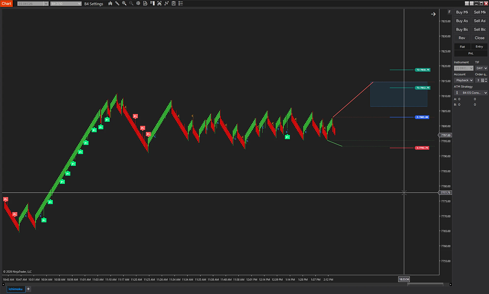
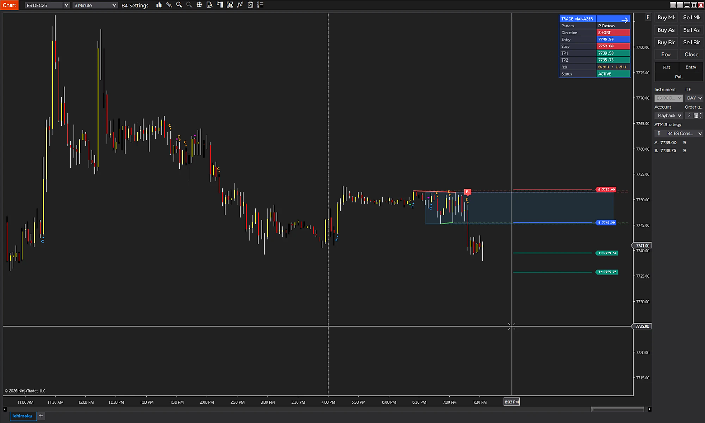

Preview


VISUALIZATION · Enhanced visualization based on a NinjaTrader 8 screen from a playback (market replay) account. Not a live trading result. Select an image to open it full size.
Discover Ichimoku P and Y Patterns. Reveal Hidden Structure. Plan with Precision.
Proprietary Ichimoku Analysis Beyond the Standard Cloud
B4 PY Indicator is designed to draw professional Ichimoku P and Y patterns, combining proprietary Ichimoku analysis techniques with specialized chart visualizations to help traders recognize market structure and evaluate potential trade opportunities.
Going beyond standard Ichimoku displays, B4 PY incorporates Chikou Span analysis, consolidation boxes, and proprietary Ichimoku insights to help traders examine price relationships, identify periods of consolidation, and better understand developing market conditions.
Key Features
- Professional P and Y Patterns: Draw supported Ichimoku P and Y formations to help identify structured market opportunities.
- Chikou Span Analysis: Incorporate the Chikou Span's relationship to historical price action when evaluating market structure and potential confirmation.
- Consolidation Boxes: Visualize identified consolidation areas to help assess price compression, market structure, and potential breakout or breakdown scenarios.
- Proprietary Ichimoku Techniques: Apply specialized B4 Ichimoku analysis designed to provide additional context beyond standard indicator displays.
- Structured Entry Levels: Display associated entry levels for evaluating potential setups.
- Stop Levels and Profit Targets: Map corresponding trade-planning levels to help assess risk and potential reward.
- Integrated Chart Visualization: Bring patterns, relevant Ichimoku relationships, and trade-planning levels together for a more organized analytical view.
Built for Deeper Ichimoku Understanding
B4 PY Indicator combines pattern visualization with proprietary Ichimoku analysis to help traders examine the relationships between price, historical price action, and consolidation structure.
Use these insights alongside your broader B4 analysis to evaluate potential entries, define trade parameters, and determine whether a setup meets your confirmation criteria.
B4 PY Indicator — Proprietary Ichimoku insights. Structured patterns. Clearer trade planning.
For educational and research purposes only. Not trading advice. Pattern recognition, consolidation areas, and projected trade levels do not guarantee market direction or profitable outcomes. Specific features may vary by platform and release.